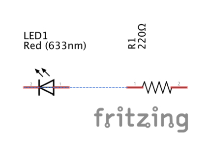
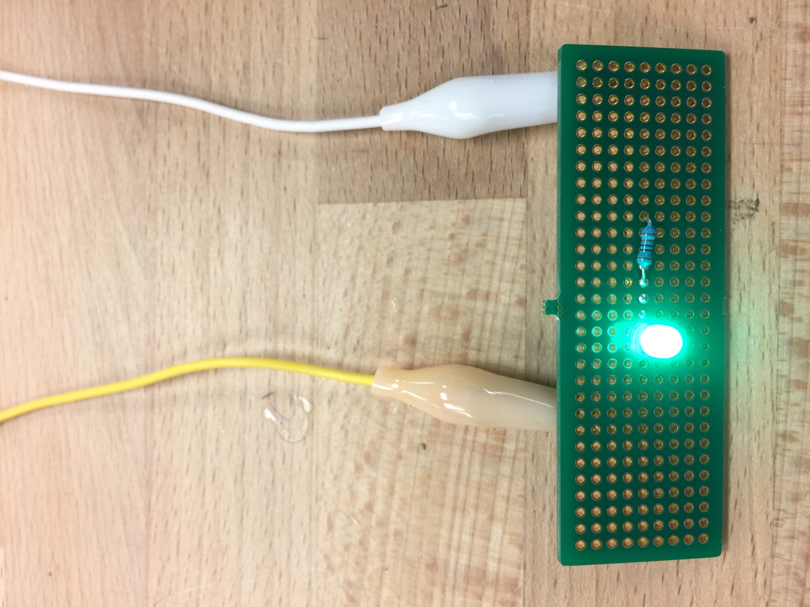

Steven Yong's Assignment 8!
Schematic
I just soldered a green LED and a 220 ohm resistor onto a perfboard.
Circuit

It's shiny, and shiny is good.
Circuit's Operation
I connected my Arduino to power via the DC power jack so that it regulates the power to the green LED. I wanted to be extra safe and made sure it didn't blow up. I used two jumper wires to connect to 5V and ground, then attached the 5V jumper wire to the unsoldered leg of the LED and the ground jumper wire to the unsoldered leg of the resistor using alligator clips.